Probability¶
Bernoulli trials¶
A fair coin is tossed 7 times. What is the probability of getting exactly 3 heads.
The probability of having the first 3 tosses heads and the rest tails is
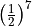
. This is one ordering of heads and tails. How many orderings are possible? We need to select 3 out of 7 positions for heads, the rest will be tails. This can be done in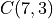
ways. Thus, the probability of getting exactly 3 heads and 4 tails in any order is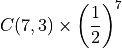
Conditional probability¶
Consider the following Venn diagram:

The set
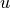
contains all the animals in a jungle, the set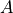
contains all the carnivorous animals in the jungle, the set contains all the mammals in the jungle, and set
contains all the mammals in the jungle, and set  contains all the animals in the jungle that can climb trees.
contains all the animals in the jungle that can climb trees.
The probability that a random animal in the jungle is a carnivore is
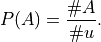
However, if we have the information that this random animal is a mammal, the the probability that this animal is a carnivore is
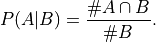
The notation
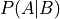
is for probability of A given B is true, or it is the probability of A conditional on B.We can simplify this as
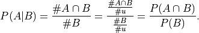
Thus,
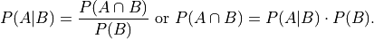
Consider another situation. The probability of a fair coin resulting in heads when tossed is . If we toss the coin and the result is heads, what is the probability that it will result in heads when it is tossed a second time. Clearly, the result of the first toss does not change the probability of getting heads in the second toss. In this case,
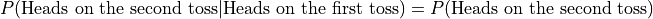
Thus,
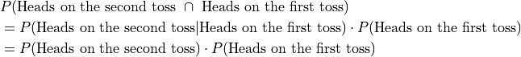
Such, events are called “independent” events. The conditional probability is just the unconditional probability. The probability of the intersection of two independent events is the product of the probability of each event.
Some more examples:
Whether it will rain today and whether it is a Monday today are independent events.
When two dice are rolled, the probability of getting 1 on the first die and 4 on the second die are independent events.
Mutually exclusive events¶
The probability of a person getting up before 7 in the morning on a weekday is 0.9. The probability of the person getting up before 7 in the morning on a weekend is 0.2. What is the probability of the person getting up before 7 on a random day?
There are two possibilites that cover all days - this random day is either a weekday or a weekend day. Moreover the day cannot both be a weekday and a weekend day. Such possibilities that are disjoint (have no overlap/intersection) are called “mutually exclusive” events. When these events cover all possibilities, they are called “mutually exclusive exhaustive” events. They are useful in the following way:
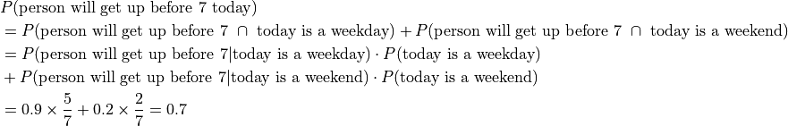
Another example is if we are trying to compute the probability whether it will snow on a random day, the relevant mutually exclusive exhaustive events would be the month of the year in which the random day could fall.
The day of the week still forms a set of mutually exclusive exhaustive events. But it is not very relevant to finding whether it would snow on that day.
Expectation value¶
When I order a package from a company, the probabilities that I get the package delivered in 1, 2, 3, 4, or 5 days are 0.2, 0.4, 0.2, 0.1, and 0.1, respectively. Note that the probabilites add up to 1. On average, how many days does it take for me to get a package?
Well we have to take the average of the number of days by weighting them by their probabilities. This quantity - the expected number of days - is called the “expectation value”. It is denoted in one of the following ways:
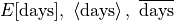
For our problem:
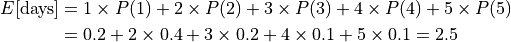
Markov Chains¶
Mary drives between three cities A, B, and C. On any given day, she will drive to a different city or will stay put in the city that she is in. The directed graph below shows the probabilities of driving from one city to another city on any given day or the probability of staying in the same city.
For example, consider all the edges that start out from node B. There is an edge going out to node A with probability 0.3, another edge going out to C with probability 0.6, and an edge looping back to B with probability 0.1. Thus, if Mary is at B. There is a 0.3 probability that she will drive to A that day, a 0.6 probability that she will drive to C, and a 0.1 probability that she will remain in B. These probabilities have to add up to 1 as they are mutually exclusive exhaustive events. There are only three disjoint possibilities. She drives to node A from B, node C from B, or stays in B.
{kind=link}
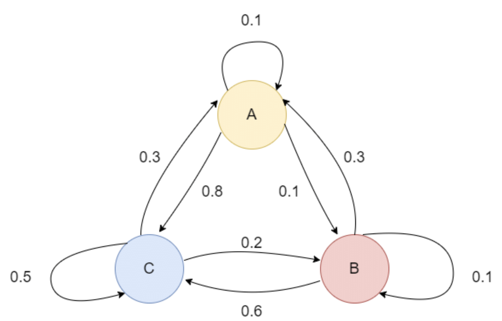
If the probabilities for Mary to be at A, B, and C at the end of Monday are 0.1, 0.4, and 0.5 (again these have to add up to 1 - mutually exclusive exhaustive events), what are the probabilities for Mary to be at A, B, and C at the end of Tuesday?
![P(\text{A on Tue}) & = P(\text{A end}|\text{A start})\cdot P(\text{A on Mon}) + P(\text{A end}|\text{B start})\cdot P(\text{B on Mon}) + P(\text{A end}|\text{C start})\cdot P(\text{C on Mon})
& = 0.1\times 0.1 + 0.3\times 0.4 + 0.3\times 0.5 = 0.28
P(\text{B on Tue}) & = P(\text{B end}|\text{A start})\cdot P(\text{A on Mon}) + P(\text{B end}|\text{B start})\cdot P(\text{B on Mon}) + P(\text{B end}|\text{C start})\cdot P(\text{C on Mon})
& = 0.1\times 0.1 + 0.1\times 0.4 + 0.2\times 0.5 = 0.15
P(\text{C on Tue}) & = P(\text{C end}|\text{A start})\cdot P(\text{A on Mon}) + P(\text{C end}|\text{B start})\cdot P(\text{B on Mon}) + P(\text{C end}|\text{C start})\cdot P(\text{C on Mon})
& = 0.8\times 0.1 + 0.6\times 0.4 + 0.5\times 0.5 = 0.57](_images/math/d3d2a1326446d8e471603acfa19176c5c9c96130.png)
The conditional probabilities above are “transition probabilities” - the probability of transitioning from one node to another - and are precisely the probabilites labelled on the graph edges.
Note that 0.28 + 0.15 + 0.57 = 1 (these are again mutually exclusive exhaustive events). A, B, and C are the only possibilities where Mary could be on Tuesday and these are disjoint possibilities. She cannot be in more than one city at the same time.
Let us simplify our notation along the following lines:
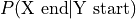
as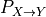
, and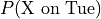
as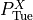
.(Advanced Concept; Optional)
Then, the above equations can be written compactly as
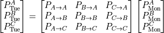
and can be treated as matrix multiplication.
Here is an example problem (last problem from AMC8 2022):
{kind=link}
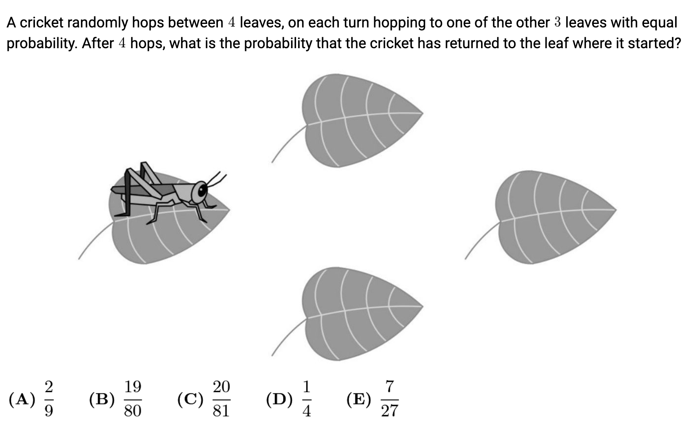
Solution:
Let the leaves be labelled 1, 2, 3, and 4, with 1 as the starting leaf.
There is symmetry in the transition probabilities.
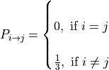
Let
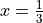
.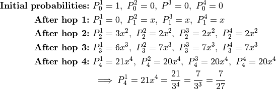
Here are the details for the hop 4 probability calculation. The probabilities for other hops are calculated on similar lines. The leaves 2, 3, and 4 are symmetrical in this problem. Thus, the probability for 2, 3, and 4 are identical after any hop. Thus, we do the calculation for only one of these three leaves and for leaf 1.

All the steps have been shown only for clarity. There is no need to write out all these steps.
There is a another way to attack this problem.
By symmetry, the probability that the cricket is on any of the leaves 2, 3, or 4 after
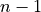
hops is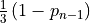
,where
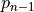
is the probability that the cricket is on leaf 1 after n-1 hops.The probability of hopping to leaf 1 from any one of these leaves in the next hop is 1/3.
Therefore, the probability of getting to leaf 1 in the nth step is
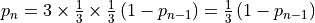
.Thus,
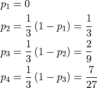
Probability Trees¶
Srini and Leo play a game. Srini starts by attempting to throw a ball into a basket. If he succeeds, the game is over. Otherwise, Leo gets to try. If Leo is successful, the game is over. Otherwise, Srini gets the next chance. They continue alternating attempts until someone gets the ball into the basket. At that point, the game is over and the person who scored the basket is the winner. On any single attempt, Srini and Leo have respective probabilities of 0.3 and 0.5 of successfully scoring a basket. What is the probability that Leo wins the game on the fourth throw?
{kind=link}
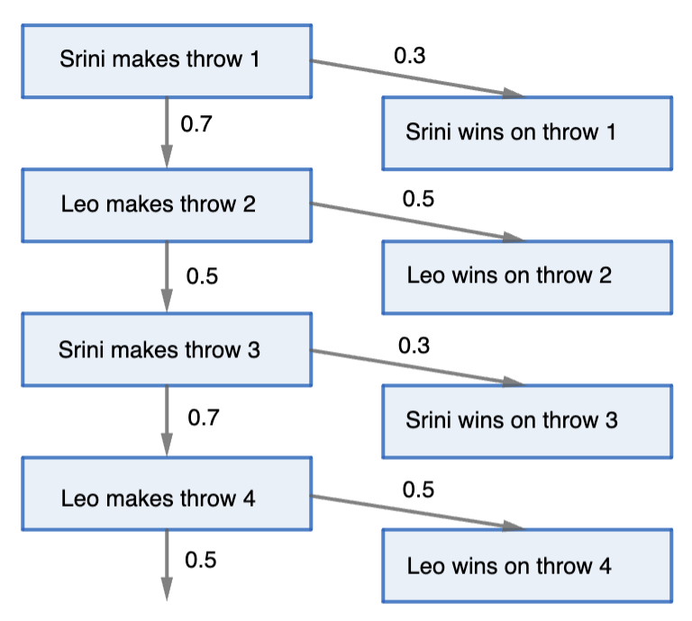
This game can be represented by the tree structure above. A tree is just a graph with no cycles (a path that starts at a node and returns to the same node after traversing one or more edges).
We traverse the tree just like we traverse the graph for a Markov chain. Each edge depicts a transition probability. The only difference is that if we transition to a leaf node (one of the nodes in the right column that has no edge starting from the node), then our journey is over.
Note that just in the case of Markov chains, the sum of the probabilities of the edges coming out of non-leaf nodes (the nodes in the left column) is 1.
The probability that Leo wins on the third throw is 0.7 x 0.5 x 0.7 x 0.5 = 0.1225. This corresponds to the node traversal “Srini makes throw 1 -> Leo makes throw 2 -> Srini makes throw 3 -> Leo makes throw 4 -> Leo wins on throw 4”.
Let us extend this analysis a little more. What is the probability that Leo is the winner irrespective of which throw he wins on?
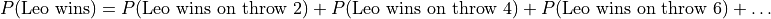
Note, the events on the right are mutually exclusive events and they are exhaustive in the sense that they cover all the cases for Leo winning.
Plugging in the values in the above sum, we get the sum for an infinite geometric progression.
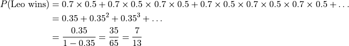
We have used the formula for adding an infinite geometric progreassion from our Adding geometric series discussion.
Similarly, we can compute the probability that Srini wins.
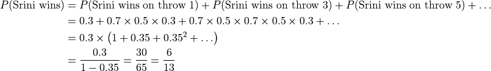
Surprise, surprise …
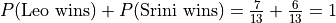
.